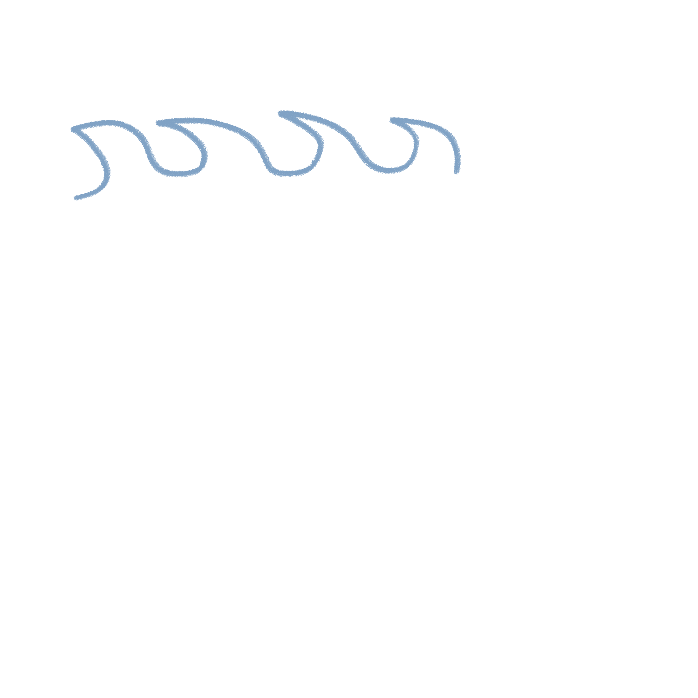

300-1929
1927-1950
1950-1960
1970-1960
The Kappa was...
“the kappa was a serious
danger
to children playing near the water”
"...it is hardly necessary to go all the way back to the Nihon shoki to find descriptions of
vicious
and
mischievous
kappa."
"...it's
lethal
tendencies, in many ways a metaphor for the violent potential of the natural world."
"The kappa, though mischievous, is essentially a
polite
creature who defers to human ritual..."
"...the dual nature of the kappa as a trickster figure with negative and
destructive
qualities, and also as a water/agriculture deity with positive
regenerative
qualities.
